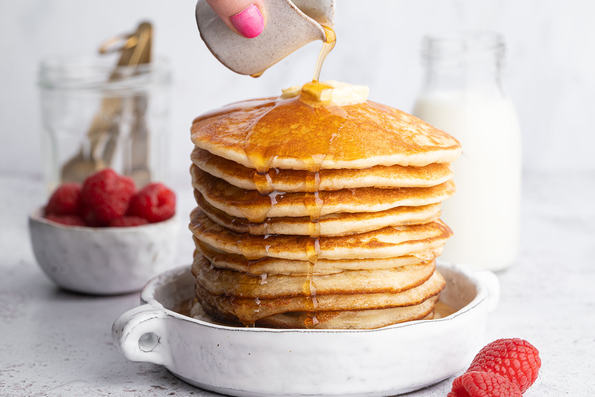

American Pancakes

Description:
American Pancakes recipe for about 12 pancakes with a diameter of 10 cm.
You can make these pancakes sweet or sour, depending on your taste.
Ingredients
- 2 eggs
- 50g sugar
- 50g butter
- 250ml milk
- 200g wheat flour
- 15g baking powder
- 10g vanilla sugar
- 2.5g salt
Steps
Nuances
Milk and eggs should be at room temperature.
- Eggs with sugar need to be whipped until the sugar is completely dissolved, the mass should lighten and increase in volume.
- Butter should be melted in a water bath, in a microwave or in a frying pan, but the fire should be small, so that the oil does not burn.
- To knead the dough can use a mixer, blender or whisk.
- It is necessary to fry pancakes on a well heated pan without adding oil!
- When frying on the pancakes bubbles appear, this means the dough is done correctly.
- If desired, you can add wild berries to the dough.
- Serve with honey, condensed milk or maple syrup.